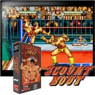
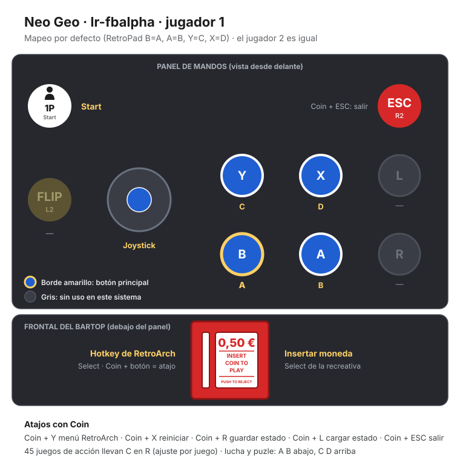

Neo Geo
3 Count Bout
- Año: 1993
- Desarrollador: SNK
- Género: Deportes / Lucha libre
- Jugadores: 2 jugadores
3 Count Bout, conocido como Fire Suplex en Japón, es un juego de lucha de arcade publicado por SNK en 1993.
Elige uno de 10 luchadores, cada uno con sus movimientos especiales, y haz tu camino desde el "Rookie Champion" al "World Heavyweight Title". Controlado por una palanca de mando de 4 botones usados para golpear, patear, saltar/body drop y pinfall.
Controles
Botones de Neo Geo estándar: A y B abajo, C y D arriba.
| Panel | Juego |
|---|---|
 | A |
 | B |
 | C |
 | D |
  | Empezar |
 | Meter una moneda |
+  | Salir del juego |
El panel en Neo Geo


Longplay

Partida completa de la recreativa (23 min), de AL82 Retrogaming Longplays: 3 Count Bout Longplay (Neo Geo) [QHD].